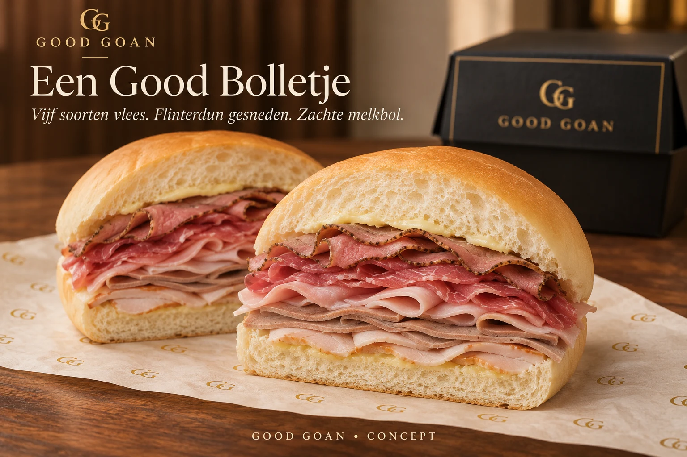
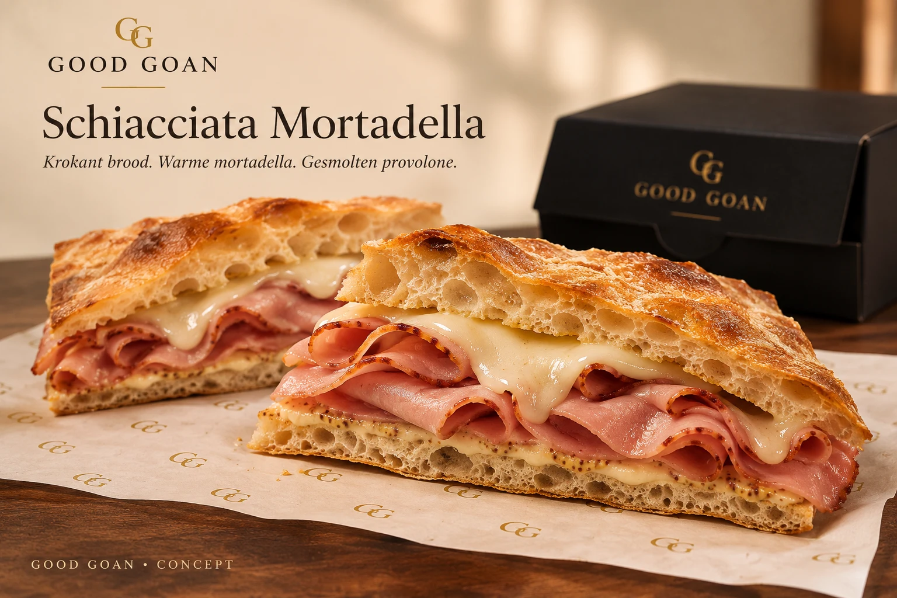
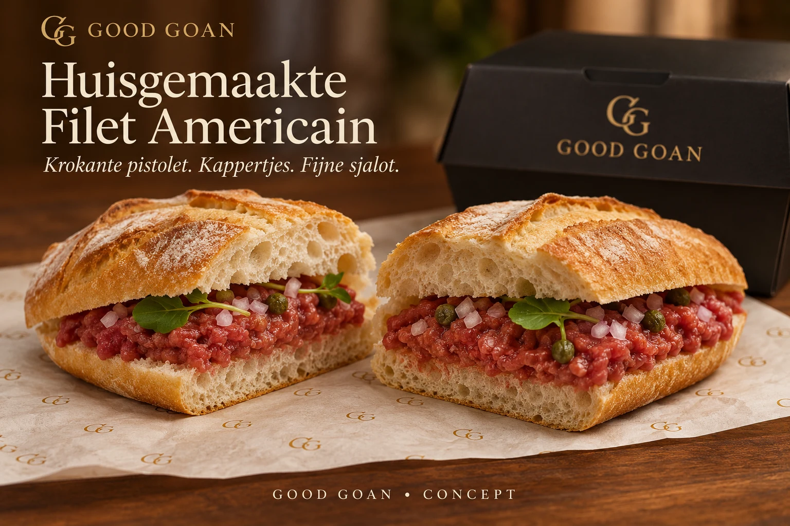

Een Good Bolletje
€ 5,95Een zachte witte melkbol met boter en flinterdun gesneden rosbief, pekelvlees, ham, lever en fricandeau. Vijf soorten samen op één bolletje.
Bekijk in de besteltestEen zachte witte melkbun. Dun gesneden vleeswaren. Een goeie kop koffie. En alle tijd om even lekker te zitten.
Een voorstel voor een broodjes- en koffiezaak, mogelijk in Ootmarsum.
Drie eigen GG-uitvoeringen om mee te beginnen. Van een zachte melkbol met vijf soorten vlees tot krokant Italiaans brood. Vers bereid, met aandacht voor iedere laag.

Een zachte witte melkbol met boter en flinterdun gesneden rosbief, pekelvlees, ham, lever en fricandeau. Vijf soorten samen op één bolletje.
Bekijk in de besteltest
Krokante schiacciata met warm gebakken mortadella, gesmolten provolone, Dijonmosterd en mayonaise.
Bekijk in de besteltest
Een krokante pistolet met onze Belgische filet americain, kappertjes en fijngesneden sjalot.
Bekijk in de besteltestVan een krachtige espresso tot een zachte latte. Met een huisgemaakt GG-koekje erbij, want even genieten zit ’m ook in de kleine dingen.
Een enkele shot, een dubbele of rustig een hele kop.
Zacht, romig of met een volle espressosmaak.
Voor een frisse koffiepauze.
*Decaf en havermelk als voorgestelde keuzes waar passend. Alle prijzen zijn voorlopige conceptprijzen. Bonen, recepturen en beschikbaarheid werken we nog uit.
Conceptbeelden · AI-gegenereerde productvisualisatiesEen eigen broodjes- en koffiezaak. Herkenbaar Twents, warm en toegankelijk, met aandacht voor wat er op je bord en in je kop zit.
De naam Good Goan heeft ruimte voor die combinatie: goed eten, goeie koffie en een goed moment. Het eerdere zwart-goud-ivoor merkidee vormt de basis voor deze nieuwe horeca-uitwerking.
We verkennen het idee. Er is nog geen definitief adres, openingsdatum of bezorggebied.
Bekijk hoe online kiezen en samenstellen voor Good Goan kan werken.
Bekijk de besteltestGeen echte betaling, bestelling of bezorging.